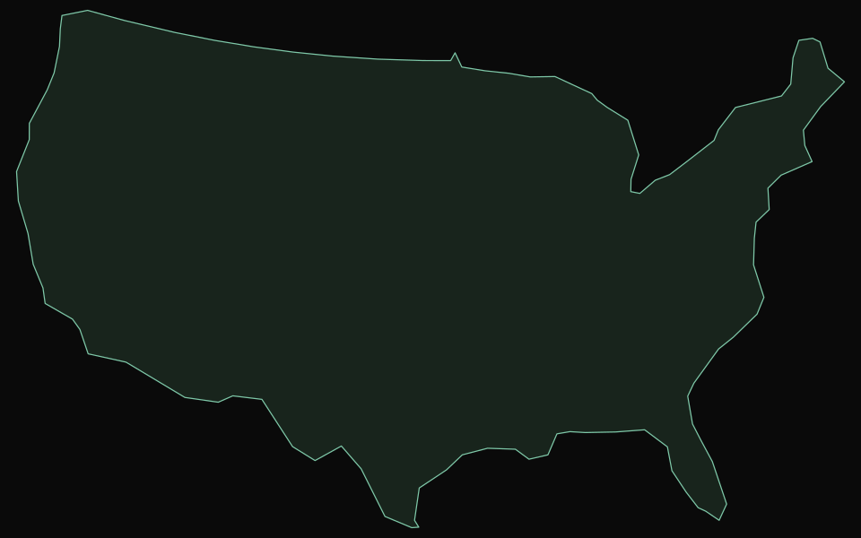

You stay in the world
Log off and you are not shelved. Your body stays as an Echo. Get hurt and you may wake up in clinic. Nobody loots you for going to dinner.
Alpha · no download
American towns on a layered afterlife. Hunters take cases. Older things borrow other people's faces. You type commands; the world keeps running when you log off.
Same account as telnet. Works on Chromebooks and locked-down networks.
Alpha build. Your character stays in the world when you disconnect. Discord is OOC.
News — what changed, same list as in-game changes.
Log off and you are not shelved. Your body stays as an Echo. Get hurt and you may wake up in clinic. Nobody loots you for going to dinner.
Mortal, monster, or celestial — hunter, vampire, angel, witch, and worse. Pick a Path in chargen. Type help origins once you are in.
Drive the American overland atlas. Towns and dungeons sit on real geography. No convenience teleport.
NPCs work, eat, hunt, and get into trouble on the same verbs you type. This is not a lobby.
look — the room and who is here.n s e w — walk.help origins — what you picked in chargen.help — topic index. The whole command list is on the site too.bug what broke. suggest an idea.A text MMO. You read room descriptions and type commands — look, n, say, help — like a book you can interrupt. No art budget, so the weird stuff stays weird. We put a browser client on the front so you do not need a telnet program to try it.
Screen reader: type config screenreader once in-game to
flatten framed UI. The browser client also has a high-contrast theme.
The game never signals anything by color alone.
18+. Horror and violence are part of the world. Roleplay MUD, not hard RPI: level, trade, explore, hang out. In-scene OOC, griefing, and wrong-franchise walk-ons are not allowed.
Free. No pay-to-play and no pay-for-perks.
Player versus player is allowed. The rules around it are still being written. You can play a peaceful character — jobs, town, the road — without hunting other players.
Towns and dungeon mouths sit on real geography. Hover or tab a mark. Drive there in play — this map is not a teleport button.

Hover a mark.